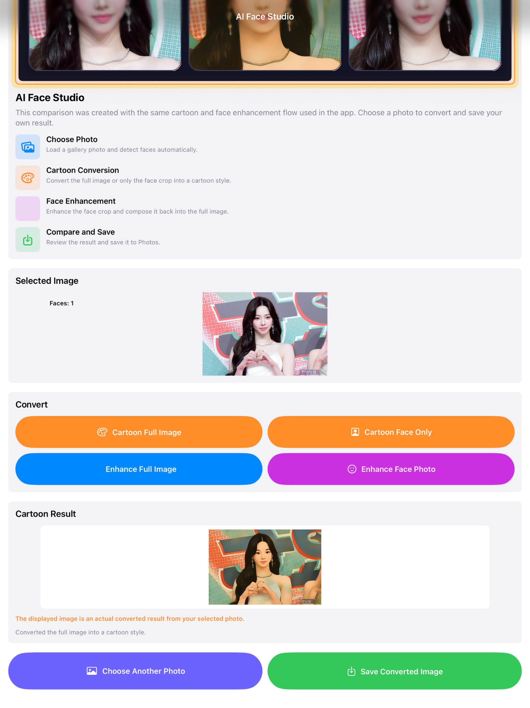
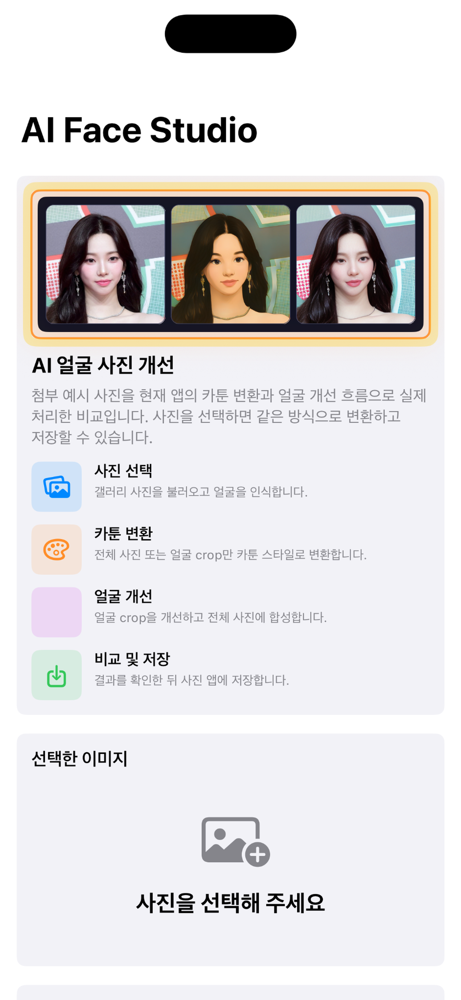
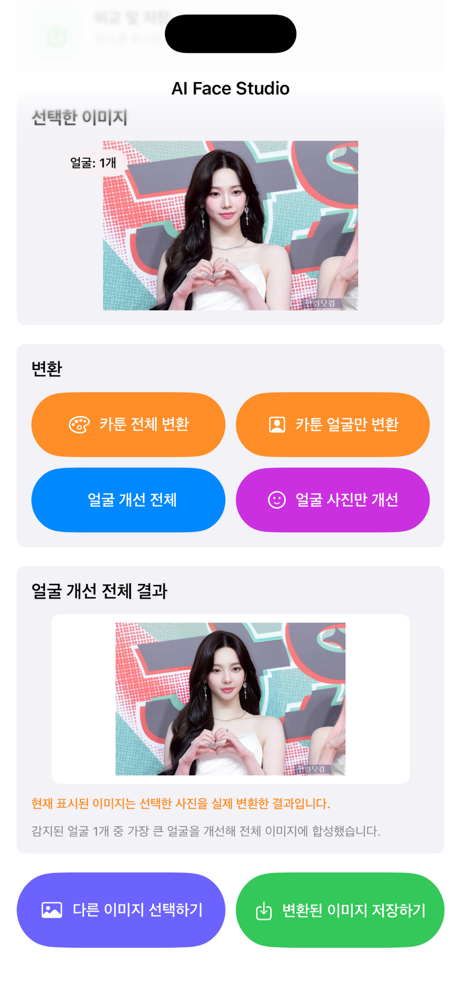
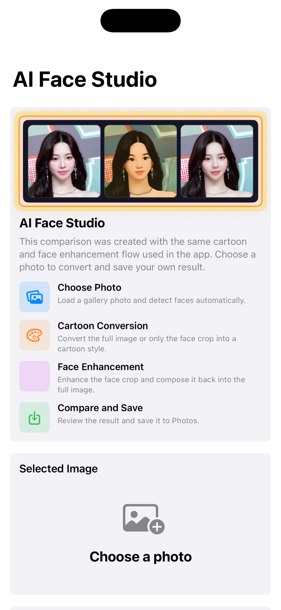
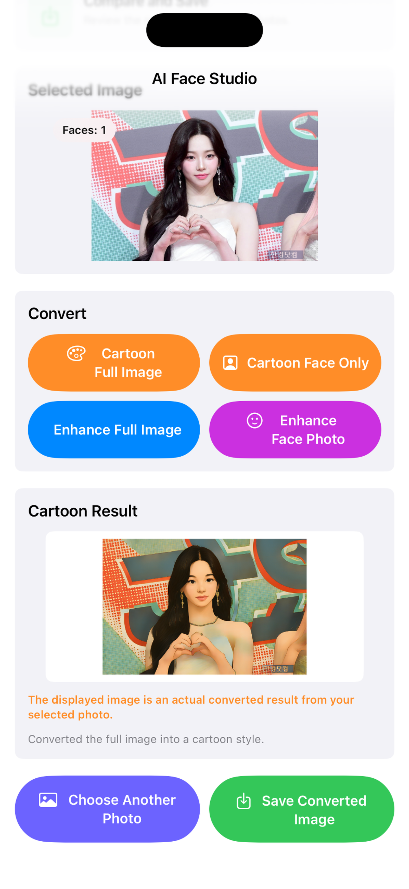

AI Face Studio lets users choose a photo, detect faces automatically, convert the full image or face crop into a cartoon style, enhance face details, and save the final result to Photos.
AI Face Studio는 사진을 선택하고 얼굴을 자동 인식한 뒤, 전체 사진 또는 얼굴 영역만 카툰 스타일로 변환하고 얼굴을 개선하여 저장할 수 있는 앱입니다.

Load a photo from the gallery and detect faces automatically.
갤러리에서 사진을 불러오고 얼굴을 자동으로 인식합니다.
Convert the full image or only the face crop into a cartoon style.
전체 사진 또는 얼굴 영역만 카툰 스타일로 변환합니다.
Enhance the detected face crop and composite it back into the full image.
얼굴 영역을 개선하고 전체 사진에 다시 합성합니다.
Review the converted image and save it to Photos.
변환 결과를 확인한 뒤 사진 앱에 저장할 수 있습니다.



